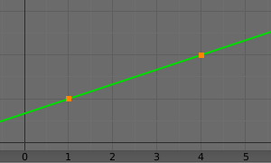

Transformation Constraint 自设变换约束¶
此约束比其他"变换"约束更加复杂、强大。它允许在给定取值范围内(视目标和约束对象属性类型有所不同)，将目标的某个变换属性(即位置、旋转或缩放)，映射到约束对象同一或其他类型的变换属性。你也可以切换轴向，并使用没有限制的范围值，而是作为"标记"来定义输入(目标)和输出(约束对象)值之间的映射。
所以，例如你可以使用目标在X 轴的位置来控制绕约束目标的Z轴旋转，规定目标X 轴的一个单位对应于约束对象Z 轴旋转10个单位。这通常用在齿轮(见下面的说明)，和基于位置的旋转。
选项¶
Transformation panel.¶
- Target 目标
数据ID used to select the constraints target, and is not functional (red state) when it has none. See common constraint properties for more information.
- 延伸
By default, the Min and Max values bound the input and output values; all values outside these ranges are clipped to them. When you enable this button, the Min and Max values are no longer strict limits, but rather "markers" defining a proportional (linear) mapping between input and corresponding output values. Let us illustrate that with two graphs Fig. 延伸原理。. In these pictures, the input range (in abscissa) is set to (1.0 to 4.0), and its corresponding output range (in ordinate), to (1.0 to 2.0). The yellow curve represents the mapping between input and output.
延伸原理。¶ 
禁用延伸: 输出值都被限制在 (1.0 至 2.0) 范围内。¶
启用延伸：输出值是按输入值等比例得出的 “自由”值。¶
- Target/Owner
Standard conversion between spaces. See common constraint properties for more information.
- Influence
Controls the percentage of affect the constraint has on the object. See common constraint properties for more information.
Map From¶
包含输入(目标)设置。
- Location, Rotation, Scale
单选按钮，用于选择要使用的属性类型。
- 模式(旋转)
指定旋转输入要使用的 欧拉 顺序， 四元数 和其他 旋转通道模式。 默认使用约束物体的 欧拉 顺序。
在 四元数 模式下，通道将被转换为加权角和 摆动角和X/Y/Z扭转 模式相同。
- X/Y/Z Min, Max
每个轴(X，Y和Z)独立地控制输入值范围的下限和上限。 请注意，如果最小值高于其对应的最大值，则约束的行为就像它具有与最大值相同的值。
Map To¶
包含输出(至约束对象)的设置。
- Location, Rotation, Scale
三个单选按钮用于选择要控制的属性类型。
- 顺序
指定在旋转约束期间使用哪种 欧拉 顺序。默认为约束对象的顺序。
- X/Y/Z Source Axis
The three axis selectors allow you to select which input axis to map to, respectively (from top to bottom), the X, Y and Z output (owner) axes.
- Min, Max
The Min and Max number fields control the lower and upper bounds of the output value range, independently for each mapped axis. Note that if a min value is higher than its corresponding max value, the constraint behaves as if it had the same value as the max one.
- 混合
指定如何混合约束结果和现有值。可用选项的菜单因转换类型而异。
- 替换
约束的结果替换现有的值。
- 相乘(缩放)
约束的结果将与现有值相乘。
- 相加(位置、旋转)
约束的值与现有的值相加。
- Before Original (Rotation)现有值之前
约束的值将在现有值之前添加，就像已将其应用于约束对象的父级一样。
- After Original (Rotation)现有值之后
约束的值将在现有值之后添加，就像已将其应用于约束对象的子级一样。
Note
由于历史原因， 混合*模式在位置和旋转中默认为 *添加 ，缩放中默认为 替换 。
当使用目标的旋转变换属性作为输入，无论真正的值是什么，约束将始终"重置回" (-180, 180)范围。例如，如果目标绕 X 轴旋转420°，约束实际使用的 "X" 输入值将是：
\(((420 + 180) modulo 360) - 180 = 60 - ...\)
这就是为什么此约束不是真的适合齿轮 ！
类似地，当使用目标缩放变换属性作为输入，无论真正的值是什么，约束将始终使用其绝对值(即对负值取负)。
当 最小值 高于其相应的 最大值 时，两个值都会取为 最大值 。这意味着不能创建"反向"映射...